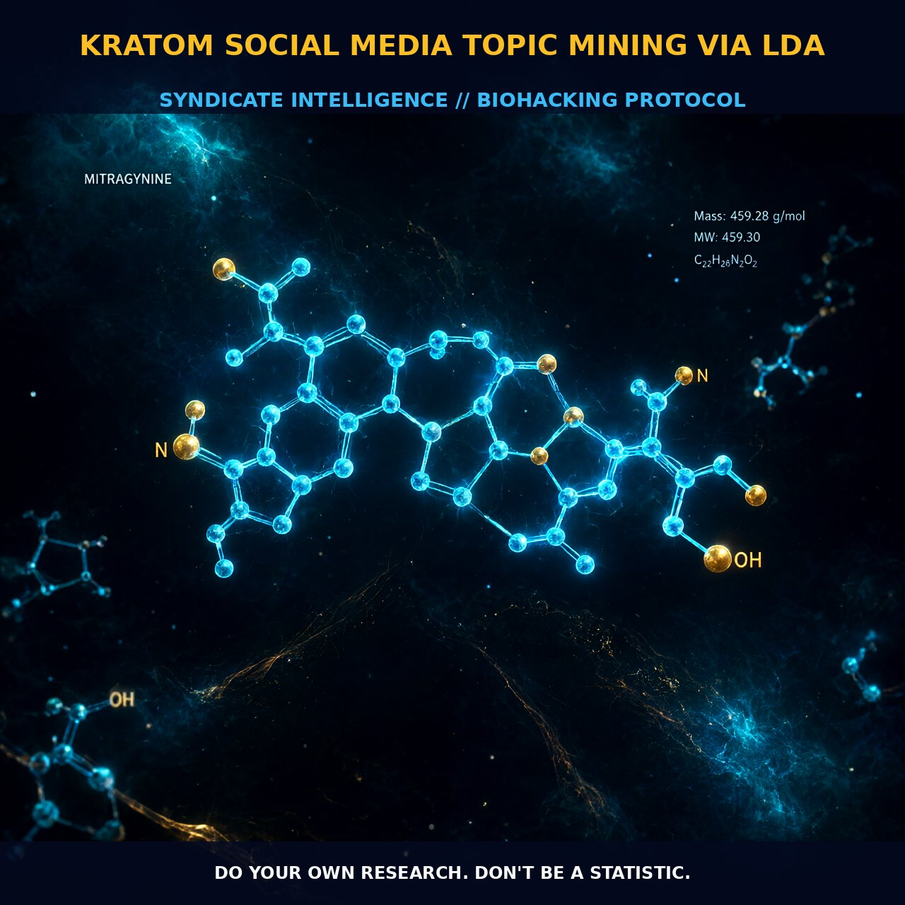

LDA Topic Modeling: Quantifying Kratoms Neuromodulatory Efficacy

1. Signal Extraction via Latent Dirichlet Allocation
The extraction of meaningful signal from the vast noise of social media discourse relies on the statistical precision of Latent Dirichlet Allocation (LDA). This model treats textual data as a 'bag of words', systematically identifying underlying thematic structures that simpler keyword counting often misses. By leveraging coherence scores to optimize topic parameters, our analysis has isolated fifty-four distinct topics for adverse effects and fifty-two for benefits. This probabilistic approach allows a single user post to belong to multiple categories simultaneously, capturing the nuanced, mixed nature of real-world usage.
This methodology bridges the gap between short-form immediacy on Twitter and the detailed narratives found in Reddit threads, creating a unified analytical framework. Validation is rigorous, utilizing visualization tools like PyLDAVis alongside t-distributed stochastic neighbor embedding (t-SNE) to map high-dimensional data into interpretable 2D or 3D spaces.
2. Statistical Robustness and Clinical Correlation
The integrity of this data is ensured through extensive text normalization, including lemmatization and stop word removal, which strips away linguistic clutter to reveal core patterns. Inter-rater reliability serves as the critical metric for validation, with studies achieving a remarkable kappa statistic of 0.99 for post relevance and 0.86 for benefit topic labeling. These figures indicate almost perfect agreement between independent analysts.
This statistical robustness transforms subjective user experiences into quantifiable data points regarding kratom efficacy and toxicity, moving the conversation beyond anecdotal reports to evidence-based behavioral insights.
3. Biological Leverage: Addiction Recovery and Neuromodulation
The primary biological narrative extracted from this data centers on kratom’s utility in addiction recovery and opiate withdrawal management, accounting for a dominant 32.49% of identified benefit topics. This prevalence suggests a potent modulatory effect on opioid receptor pathways, though the specific subtypes are secondary to the observed clinical outcome: reduced withdrawal symptoms and enhanced mood stability.
Users frequently report alleviation of anxiety, depression, and chronic pain, pointing toward broader neuromodulatory activity that extends beyond simple analgesia to influence emotional regulation systems effectively.
4. Adverse Profiles and Dose-Dependent Mitigation
Adverse effects present a balanced physiological profile. Gastrointestinal distress—specifically nausea, upset stomach, and constipation—emerges as the most common downstream signal. Beyond digestion, data highlights potential elevations in heart risks and impacts on respiratory function, alongside specific threats to liver health that warrant monitoring during sustained use.
These adverse events are dose-dependent, suggesting that biological leverage is maximized within a therapeutic window where benefits outweigh the risk of gastrointestinal or cardiovascular strain. The social media narrative confirms that while kratom aids overall mental well-being and energy, it requires mindful titration to mitigate these physiological trade-offs.
5. Tactical Implementation for Biohackers
When synthesizing this data for practical application, prioritize the benefit-to-adverse-effect ratio derived from LDA topic modeling over isolated anecdotes. The 32.49% prevalence of addiction support topics provides a strong baseline for initial dosing strategies aimed at withdrawal management, while broader categories of mood and pain suggest flexibility in daily optimization protocols.
Users should monitor personal responses to gastrointestinal signals, as constipation and nausea are not merely side effects but potential indicators of dosage ceilings or individual metabolic variance. Future iterations will likely integrate advanced AI techniques to refine the separation of complex user experiences from background noise, further enhancing real-time, large-scale qualitative insights.
Prostar Life Hack
Monitor GI signals as dosage ceilings. The data confirms that constipation and nausea are key indicators of metabolic variance; adjust your titration within the therapeutic window to maximize neuromodulatory benefits while mitigating cardiovascular and hepatic risks.
[ AUTHOR: LEAD TECHNICAL RESEARCHER ]